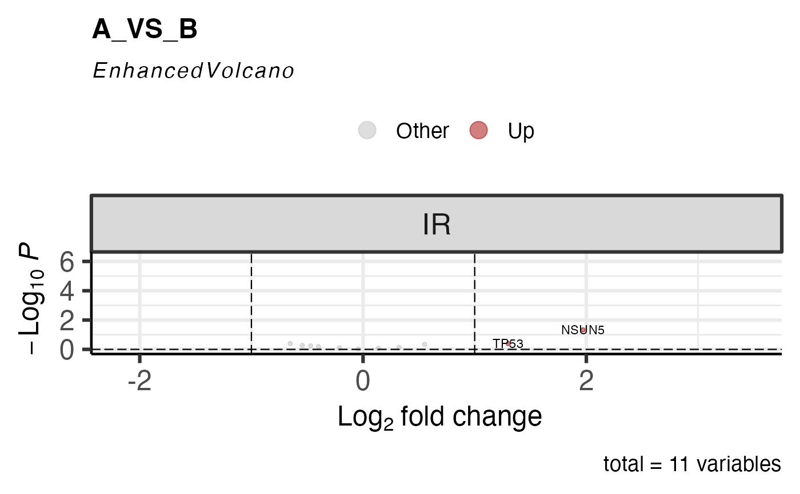
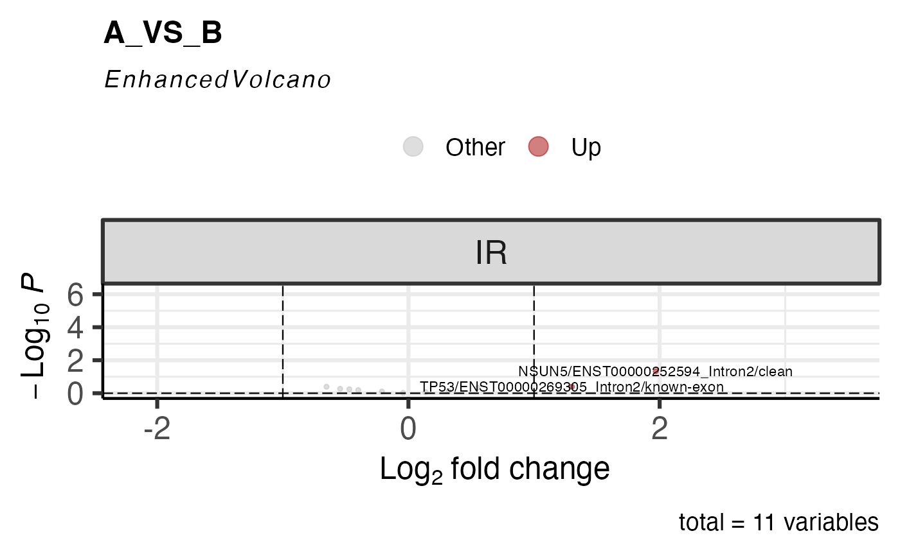
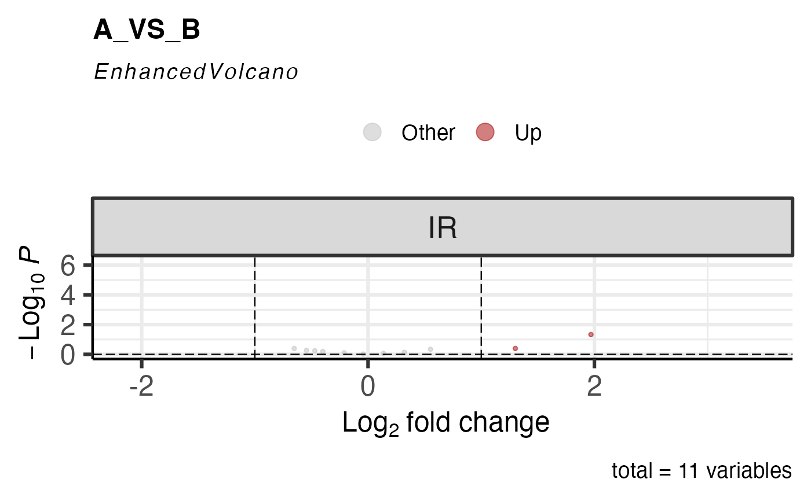

Generate a volcano plot for diff. ASE.
Usage
get_ase_volcano_plot(
x,
sample_comparison,
event_type = "IR",
log2fc_cutoff = 1,
pval_cutoff = 0.05,
ASE_to_display = NULL,
lab_size = 3,
point_size = 1,
repair_ASE = TRUE,
col_up = "#a40000",
col_down = "#007e2f",
col_other = "grey",
facet_event_type = TRUE,
facte_nrow = NULL,
facet_ncol = NULL,
facet_scale = "fixed",
facet_shrink = TRUE,
facet_labeller = "label_value",
facet_as.table = TRUE,
facet_drop = TRUE,
facet_dir = "h",
facet_strip.position = "top",
...
)Arguments
- x
an abject of class "parcutils_ase". This is an output of the function
run_ase_diff_analysis().- sample_comparison
a character string denoting a valid differential ASE comparison. Possible comparisons can be found from x$de_comparisons.
- event_type
a character string, default "IR" denoting valid event_type to display in the volcano plot. Values could be one of the "IR","SE","AFE","ALE","MXE","A3SS","A5SS".
- log2fc_cutoff
a numeric value denoting logFC cutoff for volcano plot. Default 1.
- pval_cutoff
a numeric value denoting pvalue cutoff for volcano plot. Default 0.05.
- ASE_to_display
a character vector of the ASE to display in volcano plot, default NULL, displays non overlapping ASE.
- lab_size
a numeric value, default 3, denoting size of the labels.
- point_size
a numeric value, default 1, denoting size of the points.
- repair_ASE
logical, default TRUE, indicating whether to repair event names. See details.
- col_up
a character string, default
#a40000, denoting valid color code for up regulated ASE.- col_down
a character string, default
#007e2f, denoting valid color code for up regulated ASE.- col_other
a character string, default "grey", denoting valid color code for other than up and down regulated ASE.
- facet_event_type
logical, default TRUE, denoting whether to facet plot by event type.
- facte_nrow
pass to the argument
nrowofggplot2::facet_wrap().- facet_ncol
pass to the argument
ncolofggplot2::facet_wrap().- facet_scale
pass to the argument
scaleofggplot2::facet_wrap().- facet_shrink
pass to the argument
shrinkofggplot2::facet_wrap().- facet_labeller
pass to the argument
labellerofggplot2::facet_wrap().- facet_as.table
pass to the argument
as.tableofggplot2::facet_wrap().- facet_drop
pass to the argument
dropofggplot2::facet_wrap().- facet_dir
pass to the argument
dirofggplot2::facet_wrap().- facet_strip.position
pass to the argument
positionofggplot2::facet_wrap().- ...
other parameters to be passed to
EnhancedVolcano::EnhancedVolcano().
Details
repair_ASE: Internally event names are taken from SpliceWiz. When repair_genes is set to TRUE the string corresponding to gene symbol will be extracted. if one gene symbol assinged to more than one events, even names will be used instead of gene symbol (usually the case). This is useful when gene names to be revealed in the volcano plot.
Examples
se <- SpliceWiz::SpliceWiz_example_NxtSE(novelSplicing = TRUE)
SpliceWiz::colData(se)$treatment <- rep(c("A", "B"), each = 3)
SpliceWiz::colData(se)$replicate <- rep(c("P","Q","R"), 2)
res <- run_ase_diff_analysis(x = se, test_factor = "treatment", test_nom = "A" ,test_denom = "B", IRmode ="annotated", cutoff_lfc = 0.6, cutoff_pval = 1, regul_based_upon = 1)
#> Jan 08 11:35:57 Performing edgeR contrast for included / excluded counts separately
#> Jan 08 11:35:59 Performing edgeR contrast for included / excluded counts together
get_ase_volcano_plot(res, sample_comparison = res$de_comparisons[1], pval_cutoff = 1) %>% print()

# repair_ASE = FALSE
get_ase_volcano_plot(res, sample_comparison = res$de_comparisons[1], pval_cutoff = 1,repair_ASE = FALSE) %>% print()

# ASE_to_display = "", don't show any label.
get_ase_volcano_plot(res, sample_comparison = res$de_comparisons[1], pval_cutoff = 1,ASE_to_display = "") %>% print()
